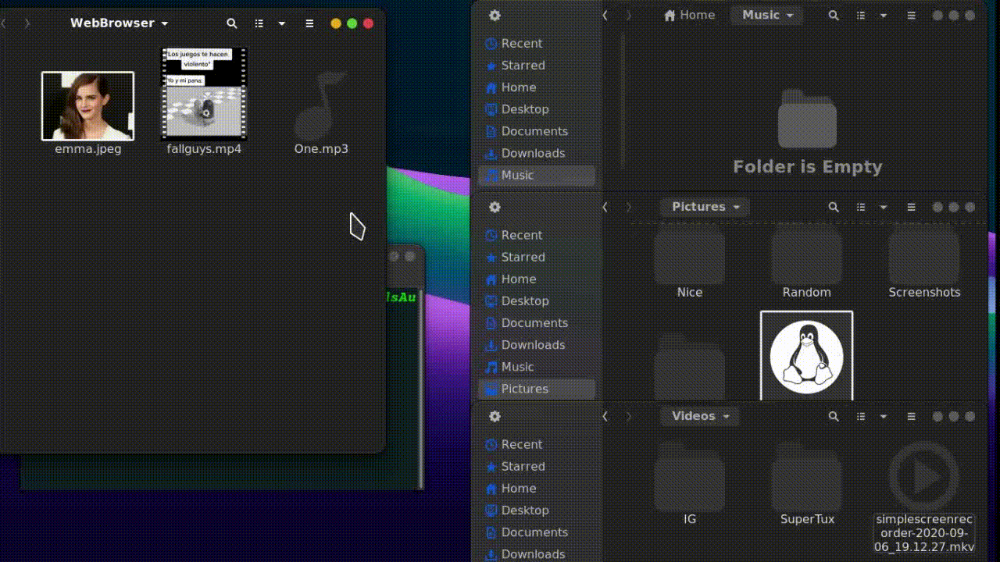

El proyecto fue desarrollado utilizando la terminal de Linux y BASH (Lenguaje de órdenes) para uso personal. Se especificó la ruta donde el programa debe buscar los archivos (en este caso se seleccionó la carpeta de descargas), se lee todo lo que está dentro de la carpeta, y dependiendo de la extensión de los archivos (Video, Foto, Música, Documento) los archivos serán movidos a su carpeta correspondiente elegida por el usuario. La dificultad de realizar este proyecto fue hacer que la terminal leyera los archivos uno por uno para poder moverlos a donde deberían ir. Esto se logró haciendo primero que se leyera la lista completa de archivos que se encuentran dentro de la carpeta, para después con un ciclo for separar línea por línea cada archivo, para finalmente, mover cada archivo a su nuevo directorio dependiendo de su extensión. Se diseñó de esta manera (sin GUI) para que el usuario pueda automatizar este proceso a su elección, en mi caso, decidí que este proceso lo lleve a cabo mi Laptop cada vez que se inicia sesión.
Categoría: Programación
Palabras clave: Programación, BASH, If, MacOS, Linux, Terminal
Funcionamiento del código
